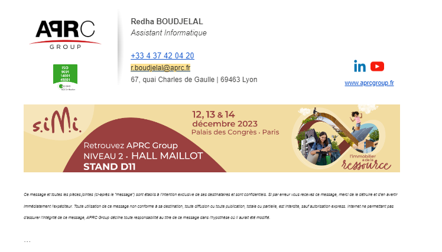
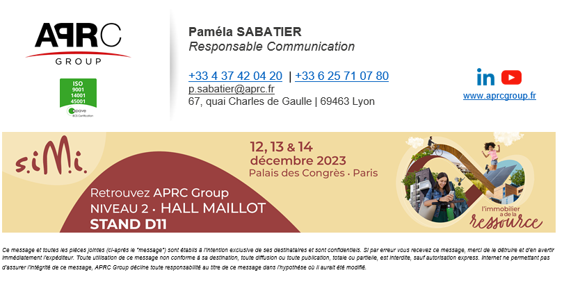

Récemment, j'ai entrepris une personnalisation approfondie des signatures HTML avec CSS spécifiquement conçues pour Outlook, en utilisant l'application CodeTwo. Cette initiative a considérablement amélioré l'apparence professionnelle de nos e-mails, renforçant ainsi de manière significative l'identité visuelle distinctive de notre entreprise.
La personnalisation des signatures s'est concentrée sur des éléments clés tels que le logo de l'entreprise, les informations de contact, et des liens pertinents. L'utilisation judicieuse du CSS a permis d'harmoniser les couleurs, la typographie et le formatage pour garantir une présentation uniforme et attrayante à travers toutes les communications par e-mail.
Grâce à cette personnalisation, chaque e-mail envoyé depuis notre organisation reflète désormais de manière cohérente les valeurs et le professionnalisme de l'entreprise. Les destinataires de nos e-mails bénéficient d'une expérience visuelle enrichie, renforçant ainsi la reconnaissance de la marque et la crédibilité de nos communications.
L'application CodeTwo a été choisie pour sa compatibilité étendue avec les spécificités d'Outlook, garantissant une intégration sans heurts et une présentation optimale sur les différentes versions du client de messagerie utilisées par notre équipe.
 